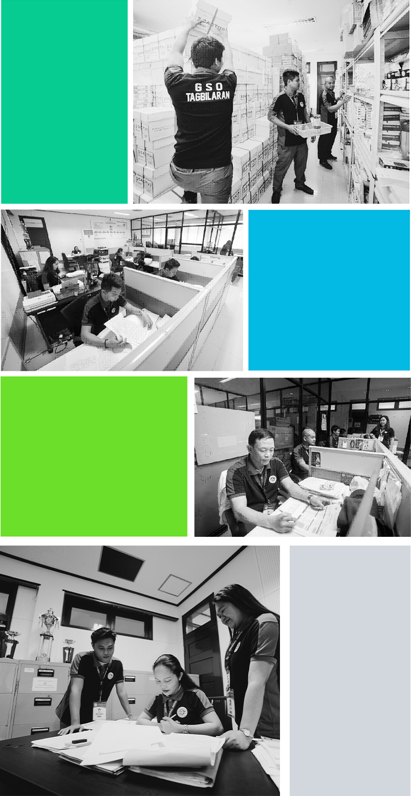

ADMIN AND GENERAL SERVICES DIVISION
DUTIES AND FUNCTIONS:
RECORDS SECTION
1. Receive, disseminate and collate all the accomplishment report, personal data files, IPCR, OPCR, memorandum circulars, officer orders and all communication letters.
2. Serves as secretariat during the CGSO monthly and division meetings.
3. Facilitate the issuance of borrower's slip.
4. Registration and insurance of all Tagbilaran City owned buildings and vehicles.
5. Check and monitor daily and mandated activities of all CGSO employees.
6. Processing of Salaries.
7. Follow-up leave application.
BUILDING MAINTENANCE SECTION
1. Extend minor carpentry, plumbing, electrical services to City Hall Building, City Health Office, Engineering Building, CSWD, City Motorpool, CGSO Building, Old City Hall, and other government owned buildings.
2. Provide sound system during programs of the City Government of Tagbilaran and flag ceremonies.
3. Maintenance of airconditioning unit owned by the City Government of Tagbilaran.
4. Facilitate request from different offices with regards to mimeographing services.
5. Maintenance and operation of city owned generator.
6. Maintenance and operation of city owned elevator.
7. Make a program of works with regards to rehabilitation and minor repair of all city government owned buildings within the city hall compound.
JANITORIAL SERVICES SECTION
1. Provide janitorial services within the city hall compound.
2. Perform groundskeeping and maintenance of landscaping within the city hall compound.
3. Management of waste disposal within the city hall compound.
4. In-charge of maintenance parking space within the city hall compound.
ASSET MANAGEMENT DIVISION
DUTIES AND FUNCTIONS:
INVENTORY SECTION
1. Tagging of property sticker and barcode to every property or equipment.
2. Conduct periodic physical inventory of government vehicle and equipment.
3. Prepare inventory report semi-annually.
4. Update asset registry.
5. Assigning spaces and buildings for government offices.
DISPOSAL SECTION
1. Facilitates the processing of unserviceable items.
2. Prepare inventory inspection report of unserviceable property (IRRUP).
3. Submit report to the disposal committee of all unserviceable equipment for appraisal.
4. Facilitates the necessary procedures for bidding of unserviceable items.
5. Submit IRRUP to COA for signatures.
6. Submit approved IRRUP to inventory and record section for filing.
RECORDS SECTION
1. Submit and facilitates annual inventory report to the following offices: COA, CMO, and CAO.
2. File and organize official records of all properties of City Government, Equipment and plant assets, ledger cards and real property cards.
3. Serves as the center of communication.
4. Facilitates payment of monthly electric and water bills.
5. Facilitates the signing and distribution of copies of ARE, PRS, ICS, and IRRUP.
6. Coordinates and reconcile plant asset records from the Accounting Office and City Assessor's Office.
7. Facilitates the request of all certified true copies and original titles of all city owned land from register of deeds.
8. Facilitates all donated and unsufruct properties.
9. Reconcile and updates renewal of PAR.
10. Encode all detailed information of each PAR and ICS for every accountable officers and employees.
SUPPLIES AND PROCUREMENT DIVISION
DUTIES AND FUNCTIONS:
PROCUREMENT SECTION
1. Create a database containing cost price analysis of the needed supplies.
2. Consolidation of all Purchase Requests from different departments and sections.
3. Canvass and monitor prices of all supplies and verify PPMP.
4. Facilitate all purchase request to ensure that all documents are completely signed by concerned offices/personnel.
SUPPLIES SECTION
1. Consolidate the following papers for transmittal (COA), BAC resolution, Omnibus, Mayor's Permit, PHILGEPS, ITR, PR, RFQ, Activity Design, Sample pictures, etc. (2 copies each)
2. Inspection of actual existence of delivery of supplies and materials as indicated in the purchase order.
3. Utilization and distribution of supplies.
4. Check and verify the requisition issue slip (RIS) for request of supplies and materials carries in stock at the CGSO Bodega.
5. Preparation of waste report.
6. Facilitate the issuance of sorting materials, office supplies and other materials and check the acknowledgement receipt for issuance and release to recepients.
7. Ensure and orderly and well arranged.
PAYMENT SECTION
1. Process all payments.
2. Liquidation of cash advances.
3. Consolidation of PPMP.
4. Preparation of CGSO Budget.
